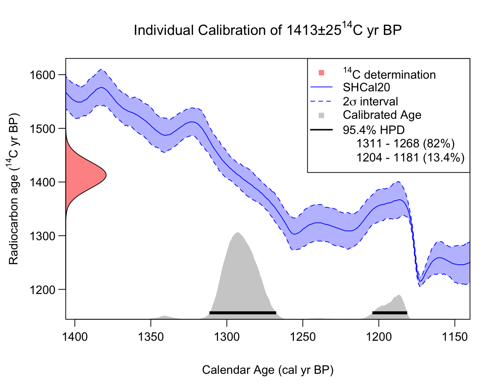

Independent Single Sample Calibration
Source:vignettes/Independent_calibration.Rmd
Independent_calibration.RmdIntroduction
This package is primarily concerned with the calibration, and summarisation, of multiple related 14C determinations. With such a set of samples, which are believed to arise from a common calendar distribution related to the culture/context under study, calibration should be performed jointly. This will allow calendar age information to be shared between the samples during the calibration process leading to improved overall calibration accuracy. It also allows us to combine and summarise the calendar age information in the entire set.
However, our library also provides functions for calibrating a single 14C sample independently. This can be useful if one does only have a single sample, or to provide comparison with the joint calibration approaches.
Independent Calibration of Single 14C Samples
To calibrate a single independent determination using the provided IntCal20 calibration curve (Reimer et al. 2020), run the following:
calibration_result <- CalibrateSingleDetermination(
rc_determination = 1413,
rc_sigma = 25,
F14C_inputs = FALSE,
calibration_curve = intcal20,
plot_output = TRUE)
Implementing SH calibration
To change to using the Southern Hemisphere calibration curve SHCal20 (Hogg et al. 2020), we can modify the function arguments accordingly:
calibration_result <- CalibrateSingleDetermination(
rc_determination = 1413,
rc_sigma = 25,
F14C_inputs = FALSE,
calibration_curve = shcal20,
plot_output = TRUE)Note: This simulated SH calibration, of the same 14C determination as above, provides a slightly more recent estimate for the calendar due to the offset (the interhemispheric 14C gradient) between atmospheric 14C levels in the Southern and Northern Hemisphere.
Selecting the calendar age scale when plotting
All the calibration curves, and the outputs from our functions, are
provided on the cal yr BP scale (where 0 cal yr BP = 1950 cal AD).
However, for the plots, the user can alter the calendar age scale shown
through the plot_cal_age_scale variable. The default is to
plot the calendar ages on the cal yr BP scale (e.g., see
above). To instead plot in cal AD, set
plot_cal_age_scale = "AD"; while for cal BC set
plot_cal_age_scale = "AD". For example,
calibration_result <- CalibrateSingleDetermination(
rc_determination = 1413,
rc_sigma = 25,
F14C_inputs = FALSE,
calibration_curve = intcal20,
plot_output = TRUE,
plot_cal_age_scale = "AD")